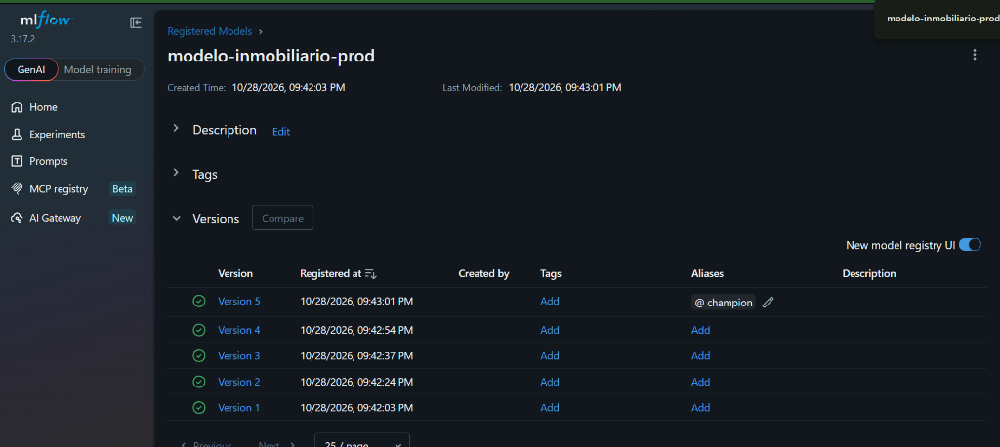
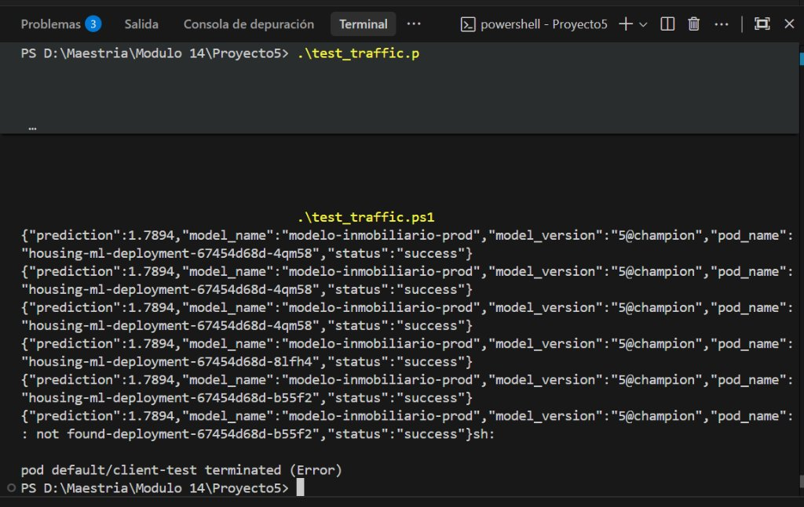
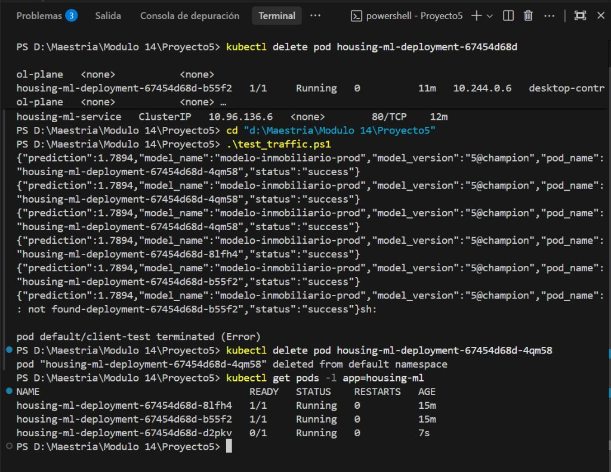
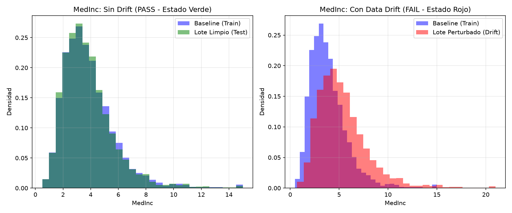
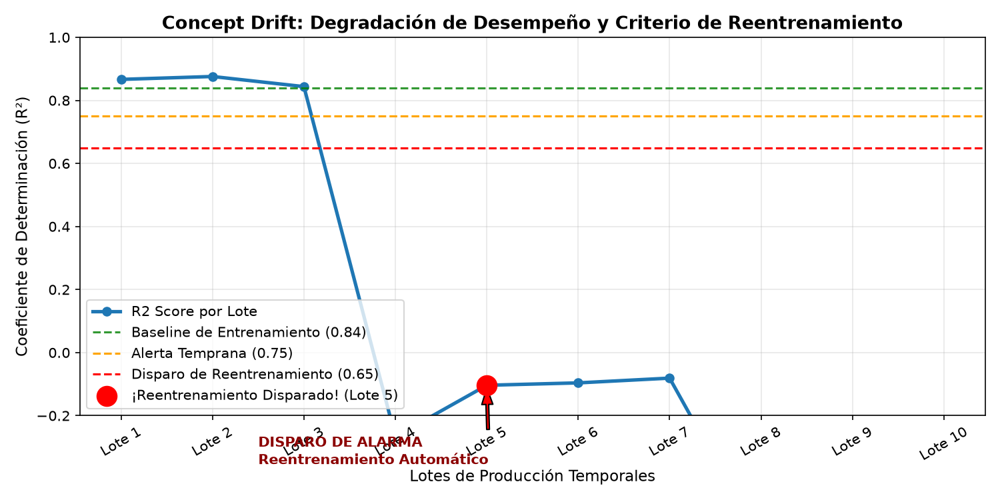
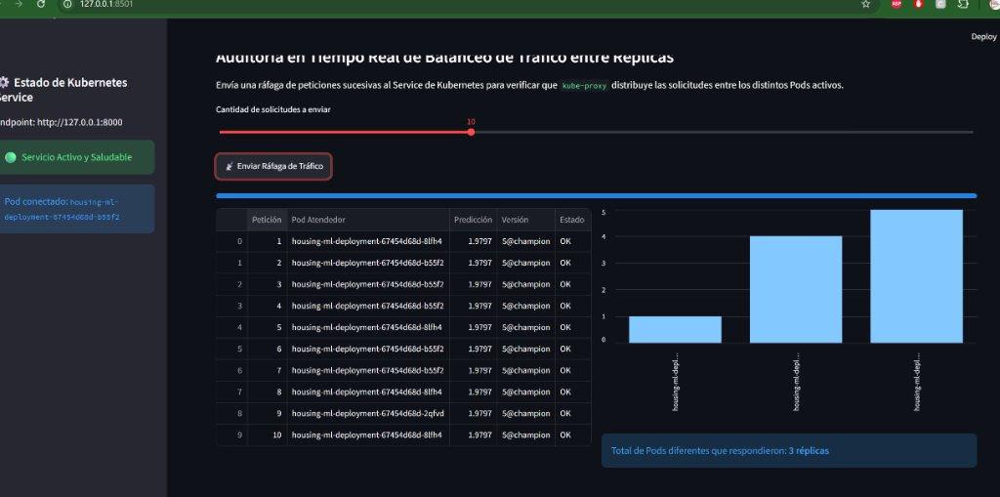

Ingeniería de software para Machine Learning: tracking reproducible, contenerización reproducible, alta disponibilidad con balanceo de carga en clúster y observabilidad continua.
El énfasis de la evaluación no radica en la exactitud matemática del modelo, sino en su ciclo de vida y resiliencia operativa.
Supera con holgura las restricciones del enunciado: no es de juguete, posee más de 1.000 filas y más de 4 variables de entrada.
MedHouseVal (Valor mediano de
viviendas en cientos de miles de USD).MedInc), antigüedad (HouseAge),
habitaciones promedio (AveRooms), coordenadas espaciales (Latitude,
Longitude).Todo el ciclo de experimentación se gestionó con MLflow Tracking y SQLite Backend.
| Run Name | Modelo | R² Score (Bondad de Ajuste) | RMSE |
|---|---|---|---|
| Run-1 | Random Forest Base | 0.7733 | 0.548 |
| Run-2 | Random Forest Deep | 0.8039 | 0.510 |
| Run-3 | Gradient Boosting Light | 0.7604 | 0.564 |
| Run-4 | Gradient Boosting Strong | 0.8321 | 0.472 |
| Run-5 | XGBoost (GPU CUDA) | 0.8415 | 0.458 |
modelo-inmobiliario-prod con 5 versiones.
@champion.
Despliegue reproducible sin depender de ninguna librería instalada en la máquina anfitriona.
python:3.11-slim para minimizar el peso y vulnerabilidades de
seguridad.@champion directamente vía
mlflow.pyfunc.POD_NAME en cada respuesta
para identificar qué pod procesó la inferencia./health con verificación de carga del modelo.
Despliegue de alta disponibilidad en clúster local de Docker Desktop / Kind.
housing-ml-deployment con 3/3 pods en estado
Running.test_traffic.ps1, las peticiones sucesivas
al Service ClusterIP se alternan entre las distintas réplicas (...-4qm58,
...-8lfh4, ...-b55f2).metadata.name del Pod como variable de
entorno POD_NAME en cada réplica.
Comprobación de robustez ante fallas y elasticidad de recursos bajo demanda.
kubectl delete pod ...). El controlador
ReplicaSet detectó la discrepancia con el estado deseado y creó un nuevo pod en estado
Running en menos de 1 segundo, sin interrumpir el servicio.
kubectl scale --replicas=5). Las 5 instancias
alcanzaron estado saludable casi instantáneamente. Posteriormente se redujo a 3 réplicas limpias,
terminando los pods excedentes de forma controlada.

Detección temprana de cambios en la distribución de las variables de entrada P(X).
MedInc y
AveRooms, la prueba detecta el Drift inmediatamente (p-value < 10⁻²⁰⁰).
Degradación en la relación entrada-salida P(Y|X) y protocolo operativo de contingencia.

Consumo real del Service en Kubernetes y auditoría gráfica de pods en vivo.
housing-ml-service en Kubernetes....-8lfh4,
...-b55f2 y ...-2qfvd atendiendo peticiones simultáneas.
